2026.10.18 / 本批设计已由用户固定
人物保持身份，合体各视图保持同一套结构
社勇王整机、勇拳与三个外部机组，以及六名角色的本批立绘/表情设计已固定。后续沿同一套源图制作，明显改造型另作决定。查看29个当前文件及固定边界 → 固定源已集中交给“战斗主玩法打磨”；接入与实测由它安排。交接内容。
当前R16 / 头部源设计已确认
头壳恢复纵向体积，耳甲与眉沿收紧
用户最新确认当前R16可以。头壳纵向体积、低额块、侧后双天线及无牌脸部/色系固定；先合回R13颈下并检查整机，不再重选头型或沿R13旧头派生。

此前R15综合结构与R14头冠探索
当前R15 / 天威勇士与擎天柱结构综合
中央低额块，高位侧后双天线，收紧方正盔体
按最新参考方向，以倍功夫/Baikanfu和经典G1擎天柱的头部结构重新综合；保持无牌青白金、琥珀视窗、白面甲与王者同系颈下。

天线长度/倾角及前后根位仍需选定后固定；当前不把新图当作已认可的头型或运行资产。
此前R14四种头冠探索
当前R14 / 头冠位置重新探索
无牌要有同系量产身份，也要有闪光时的主角感
R12矮圆整机已被用户要求重做。R13拉开头身与腿长、统一王者家族胸肩，但头顶天线仍需修改，现已画出四种主冠位置。作者优先D，B为压短后的备选；尚未替用户选定。


选主冠后再统一侧天线、头部多视图及整机。馆守沿用现有；社勇王与人物固定源图保持。
货柜领袖 / 三视与可变结构
指定头部、前凸颏甲、长腿身形与双形态三视
补人形正侧背、车形三视、头仓和轮架/腿架/三片货台设计；具体新稿待看，头仓草模只核对局部包络。
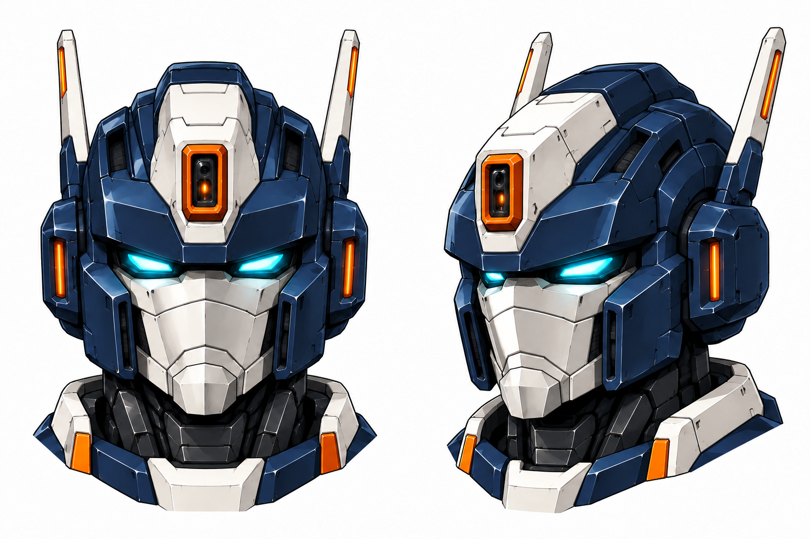

货柜领袖 / 整体盔型与布局
R4历史：用户已否定的无明显天线宽冠
R4 A/B头部已被用户否定；车形摄像头后视与既有布局仍保留原范围，布局未解决驾驶空间与支撑。

货柜领袖 / 未来双形态 R2
流线电驱车形，同步人形与无水平天线头部
参考Tesla货车方向，改单片弧面风挡、平滑前罩与导流覆壳；人形同步胸肩，头部采用中央摄像头、分节面甲与内嵌通讯块。

2026.10.21 / 历史R1 · 货柜领袖
R1历史：四轴底盘与独立货柜
沿固定v4头脸统一白蓝橙货运躯体，核对每侧四轮位、驾驶室与独立货柜。旧拳王和王者上一批源稿已按本次意见固定。

查看R1历史结构 → · 提示词组 · 上一批采用范围
旧拳王 / 正侧背三视 R2
沿现有造型，补齐同一身体的三个观察面
象牙白、土棕、深红与厚肩红拳套保留；先校准站直正面，再画侧背，保留修补装甲的左右差异。

王者 / 素体与全装三视 R12
恢复长腿身形，再看正、侧、背
R9红鳍双状态头部已采用。当前三面恢复腿身比例，并同步右肘前屈/钻头朝前；背包加中央喷口和双燃料罐。

已采用源设计保留；R10矮壮稿退出当前来源，新三视未充作模型或运行验收。
R12 / 按选定11张完成局部修订与对应补图
原头、双口背包、臂壳两态与钻机腿足现在有图可对照
整机主稿保持；本轮新画装配双格栅、背包折叠和U形臂护套，补臂壳/小翼状态和钻机分件归属示意。钝鼻侧稿、尾喷口背稿、面罩额部及无胸标核心，采用重新核对后的既有局部修正版。
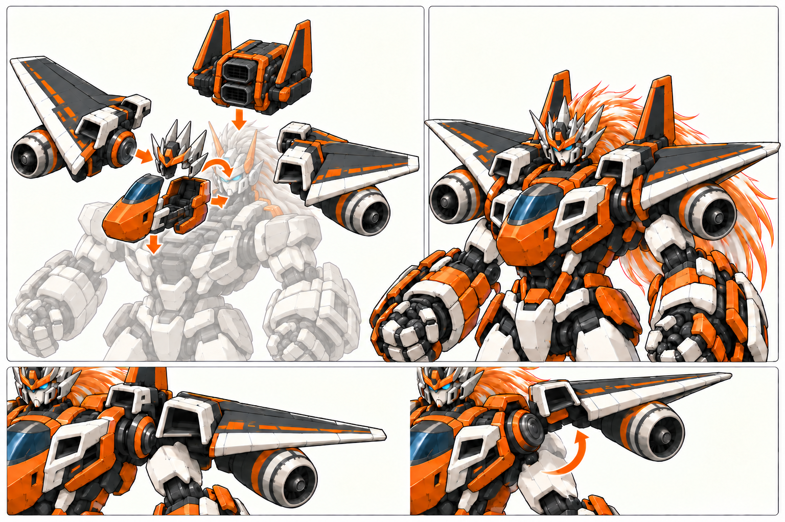
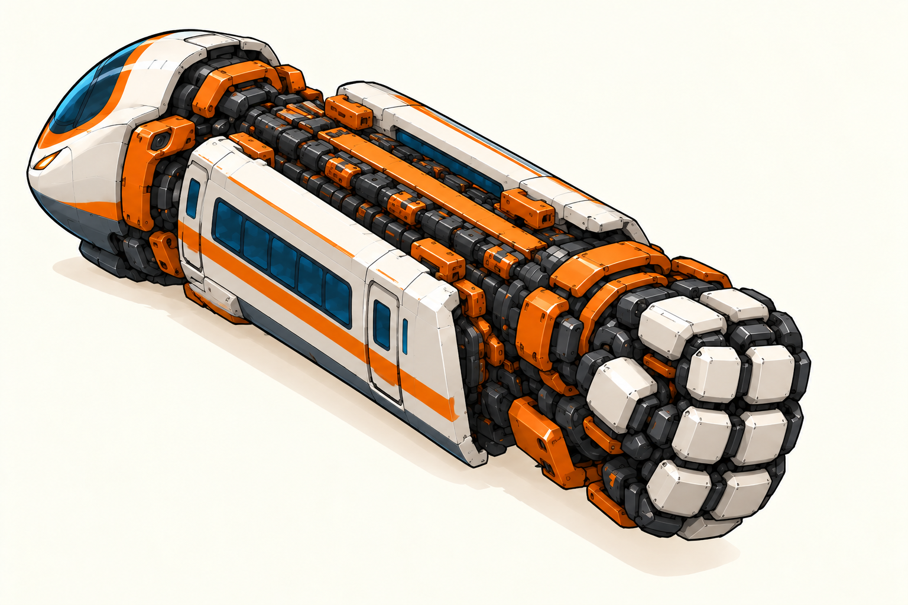
单面板局部编辑；另有小翼与腕环状态示意。
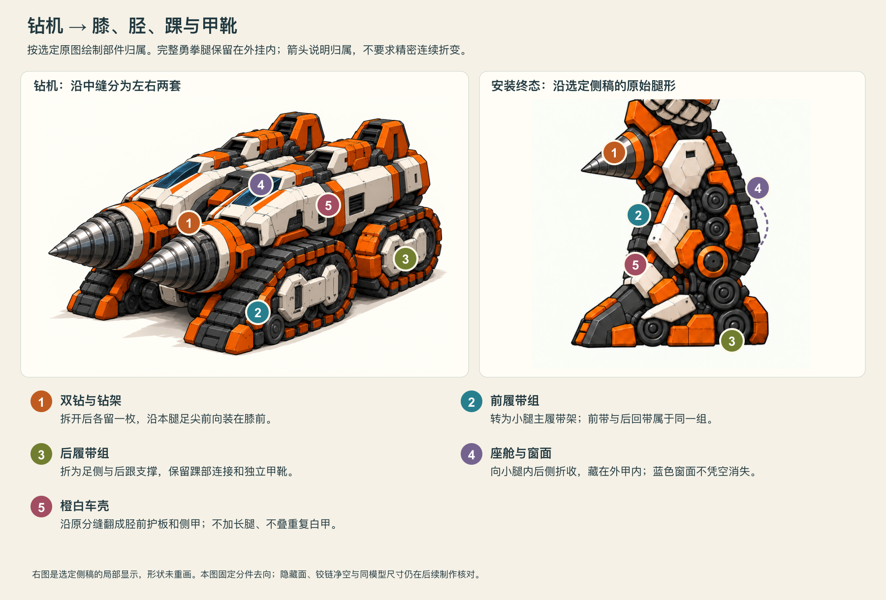
安装腿沿原选图，不另生长腿；把部件去向标清。
8项意见与实际图稿对照 · 本轮来源、实际提示及作者观察。新修订图已纳入本批固定设计并集中交接；模型、动作和运行分别验证。
此前设计迭代与选择记录（当前以R12及固定清单为准）
2026.10.18 / 按本次选图，仅补正面背包竖翼
保留选中的造型，让正面也看见背包的两片竖翼
你这次选择的正面、侧面和背面作为本轮对照。正面补出肩根后方的两片竖翼，采用橙色边框与深灰翼面；远侧部分被长发遮挡。头冠、巨拳、轰炸机主翼和履带腿沿用选定正面，不再顺带改造型。

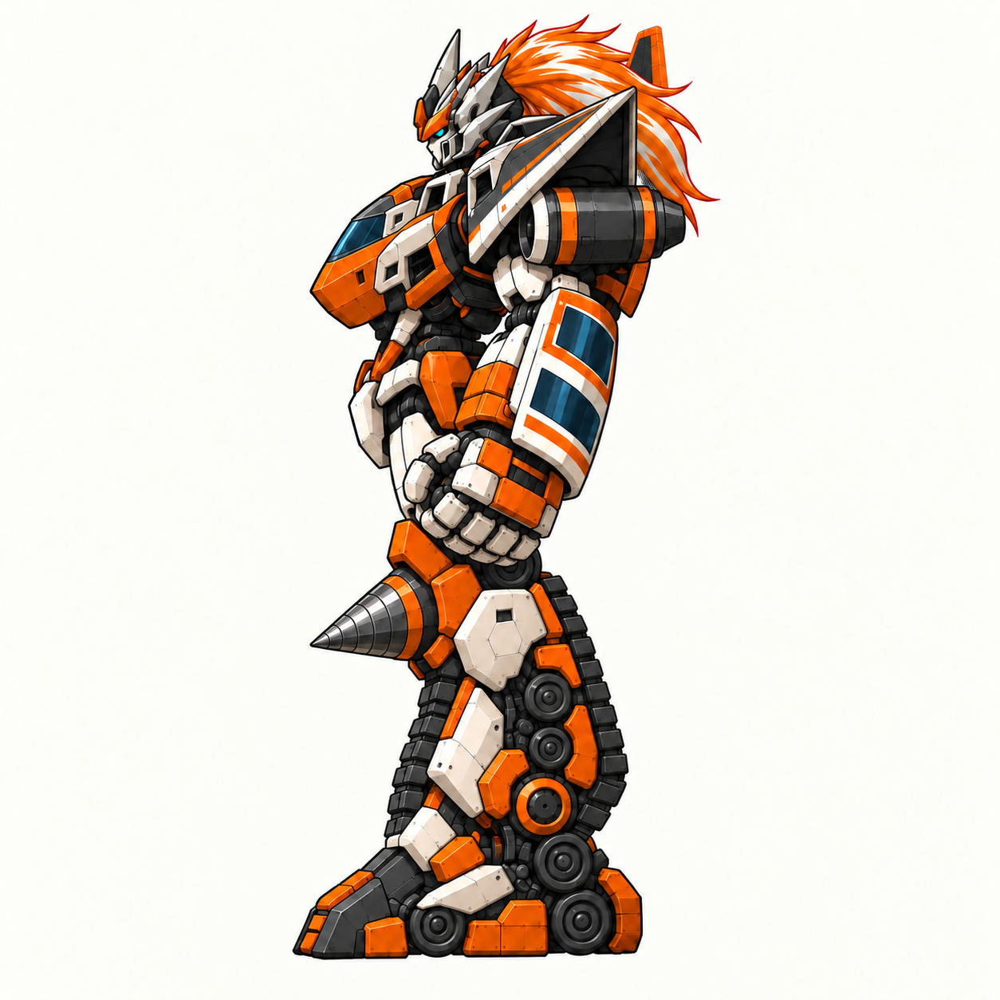
保持原图，未换成后续收钝机鼻的变体。
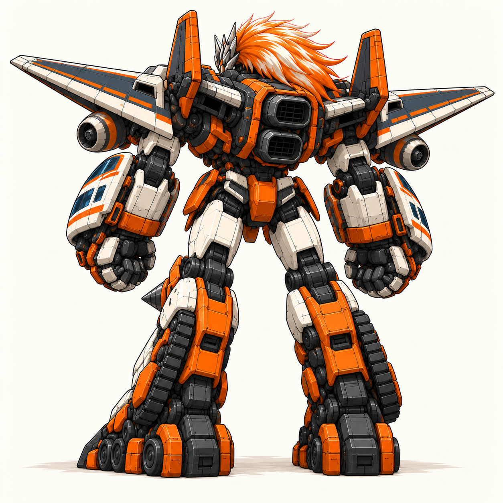
正面的竖翼取这里的形状、配色与安装位置；背稿保持原图。
本次选图、修改范围与实际检查 · 内置生图实际提示与三张输入。10月18日你回复“ok”，本次正面补翼稿收为整机外观基准；下一步对齐四机单体与各视图。三维尚未生成或替换，未另发交接消息。
历史R6：逐部件核对及侧背变体（本轮选图见上方）
2026.10.17 / 逐部件核对后绘制 / 当前侧背修订
先分清每个部件的朝向、形状和连接
上一张R5整合被你否定，已停用。我撤回了“侧肩翼必须压成薄平条”的推断；肩甲按你选的附件二中间侧图，引擎只保留已指出正确的前向轴线。前后履带要围绕同一套可理解的壳体/轮系，不再各自外挂。
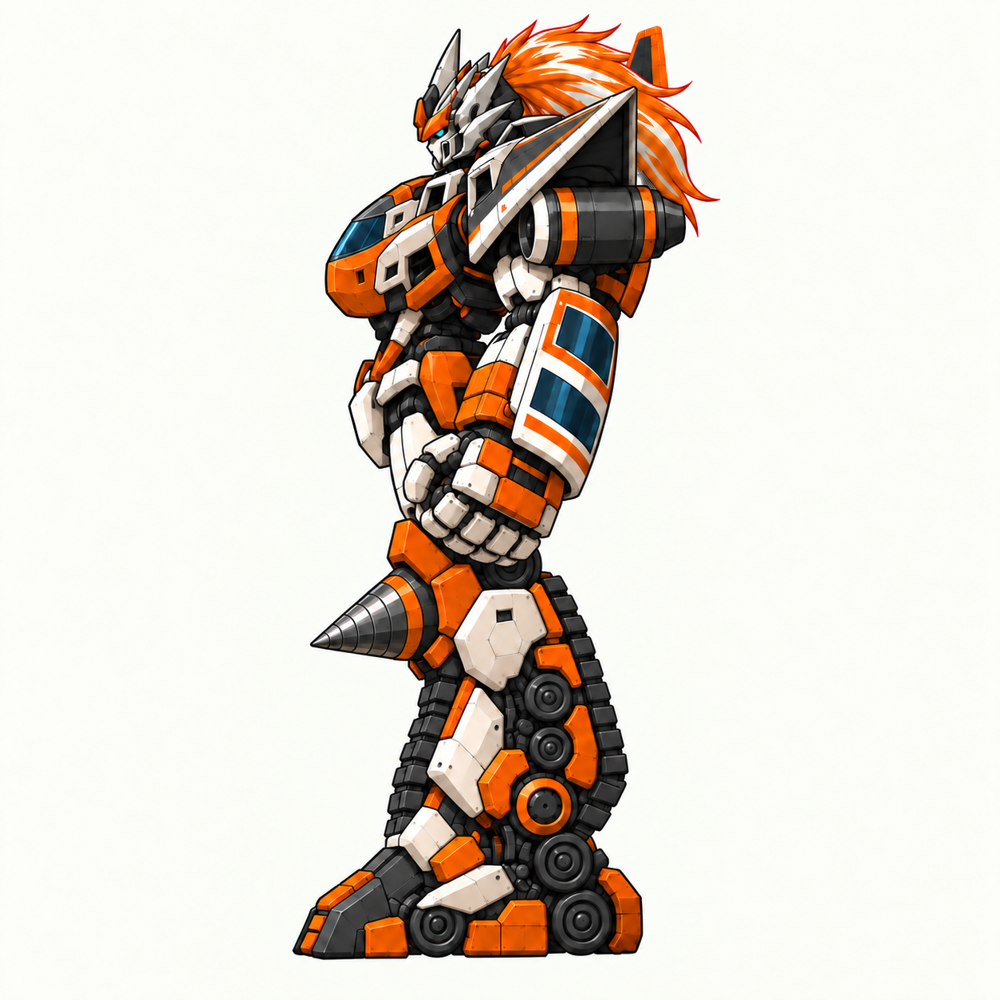
先修引擎轴向，再局部处理腿与拳腕；肩翼位置没有随腿部修改重造。最后核对背鳍边和短钝机鼻。
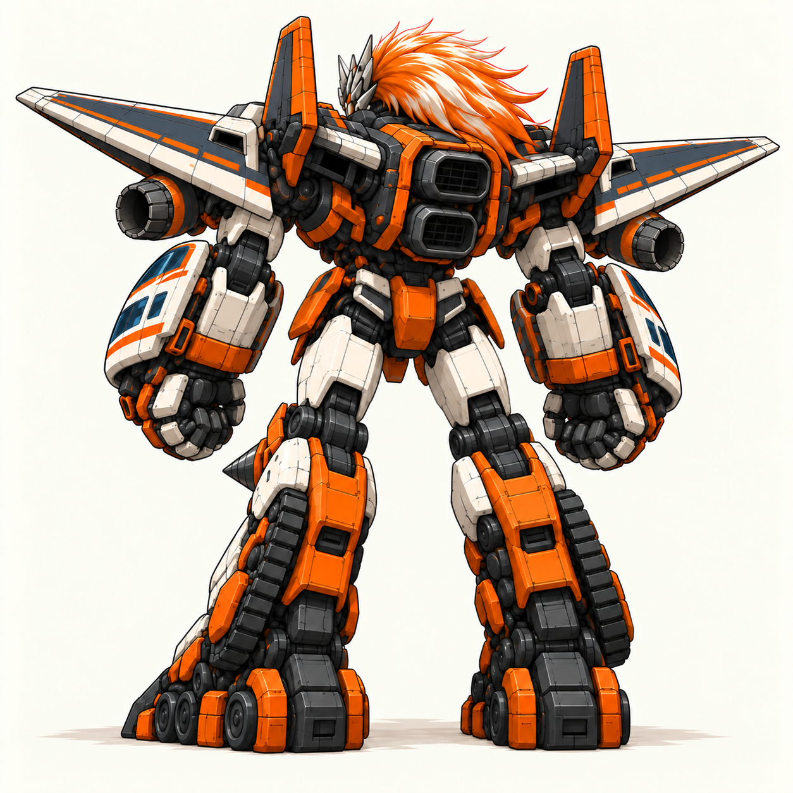
中置双矩形格栅、橙黑背包、肩后竖鳍、小腿后甲与后跟；翼下两个背向开口另行修成排气端。
打开未改动的正面母稿 · 本轮实际源稿与逐步修订记录 · 绘制前的十二组部件核对。
绘制前逐件判断：朝哪边，是什么形状，接在哪里
| 身体部件 | 朝向 | 形状与连接依据 |
|---|---|---|
| 头/冠/长发 | 朝前；长发在颅后 | 保留正面银冠、长发与眼/面甲形状；不为露出背包挪头或改脸 来源 |
| 中央机身/胸机鼻 | 机鼻沿前向，中心固定在胸背 | 短钝机鼻有厚度；不拉成长鸟喙，不绕肩轴随上臂整体转 来源 |
| 肩甲/主机翼 | 左右翼展向两侧；侧面造型按用户所选 | 采用附件二中间侧图有厚度的斜三角肩翼罩；最高点和斜率按该图，不抬成头顶大翼，不压成细条 来源 |
| 发动机/翼根支架 | 发动机长轴沿前后；进气口朝前 | 保留朝前筒体与朝后尾端；翼根支架与核心肩关节分开，不能拿朝外圆盘当肩关节 来源 |
| 核心肩/上臂/肘 | 上臂由肩甲下方下垂，肘连接前臂 | 按完整勇拳身体保留白肩甲和黑关节；发动机、翼罩不替代肩/臂 来源 |
| 加强拳臂/列车炮壳 | 拳前；车头退向肘后 | 钢拳/腕甲确实增重；列车中段左右展开包在臂外，不把整列小火车放上肩 来源 |
| 骨盆/大腿 | 重心在足间；大腿延续核心腿 | 保留白甲、橙边和髋/膝分段，不把钻探外挂长到股部或抹掉原腿 来源 |
| 膝关节/钻头 | 膝轴横向；钻头沿前向 | 钻架在膝前；钻尖和足尖同向，不能朝外或从胯部伸出 来源 |
| 小腿前/后履带与轮系 | 带面沿小腿前后；轮轴横向 | 前、后带面属于同一可理解的腿部履带壳/轮系，顶部/底部回转有去向；不另挂一条独立小履带。前带不能被大白甲彻底盖没 来源 |
| 小腿装甲/机构 | 外侧壳围轮系，前甲接膝至踝 | 保留正面黑带/白甲/橙支架层级；用轮毂、分段护板、凹入机构形成主次，不用随机液压杆和碎件填满 来源 |
| 踝/足尖/后跟 | 足尖朝前，后跟朝后，踝在小腿下 | 沿用户认可的后跟与轮组，保留脚掌承重和踝连接，不加长成船形足，不把悬挂带直接垂进脚面 来源 |
| 背包/竖鳍/小腿后甲 | 背包在躯干后；格栅朝后；竖鳍向上 | 只取绿框：中置上下双矩形格栅、橙黑包框、肩后竖鳍，后腿橙脊板/凹槽/履带/后跟；不顺带取小拳与矮身材 来源 |
实际检查时，背稿第一版仍把翼下发动机后端画成了进气风扇，这一处没有算通过，已单独修掉。侧稿也单独收掉了胸机鼻的尖端。这里记录的是看过实际图像后的局部判断，不是从文件数推定结构正确。
你选中的局部，以及本轮没有采用什么
附件二：只取中间侧面肩甲，外向引擎不取 · 引擎只取前向筒体关系，不取薄翼条肩形 · 前后履带绿框 · 背包与腿后甲绿框。
图中未圈选的小拳、偏矮身材或整张旧三视图不自动采用。被否定的R5只保留返工依据。
历史R4：薄翼条推断已撤回，旧侧稿不作当前依据
本轮修订 / 正面保持，重做冲突侧稿
社勇王：侧视不能变成另一套肩甲和履带腿
你指出的是结构不一致，不能用“只是侧向解释”带过。旧侧稿停作派生、建模来源。这次先锁定正面里的部件归属，再单独校正肩部与腿足的前后关系，最后重画侧稿。
作为肩甲、机翼、发动机、膝钻、履带与足甲的部件来源。
身体大致等高展示，统一缩放、没有拉伸图像；点击放大检查。当前是修订候选，不是同一模型导出的精确投影。
| 部位 | 旧侧稿为什么错 | 新稿实际改了什么 |
|---|---|---|
| 肩甲与上覆件 | 发动机变成外向大圆盘；翼根/肩甲层级改变 | 发动机入气口和机鼻同朝前，侧面显示筒身；翼架、发动机与下方白肩甲分别保留 |
| 机翼 | 把横向宽翼改读成厚重后掠肩片 | 侧向只保留翼面薄轮廓与翼架连接，不再用一块新肩片代替 |
| 腿足 | 小腿与脚变成巨大连体履带块 | 履带止于踝上，保留黑色踝连接；足甲是单独的厚靴形，白色上盖与橙色趾块继续对应主稿 |
| 膝钻 | 不能仅按屏幕方向拼钻头 | 钻头在膝前，与本腿足尖的前向一致 |
这些是本次实际看图后的判断；局部厚度和隐藏面的精确尺寸仍不能由两张生成图自证。正面母稿继续保留，不为迁就错侧稿反过来改正面。
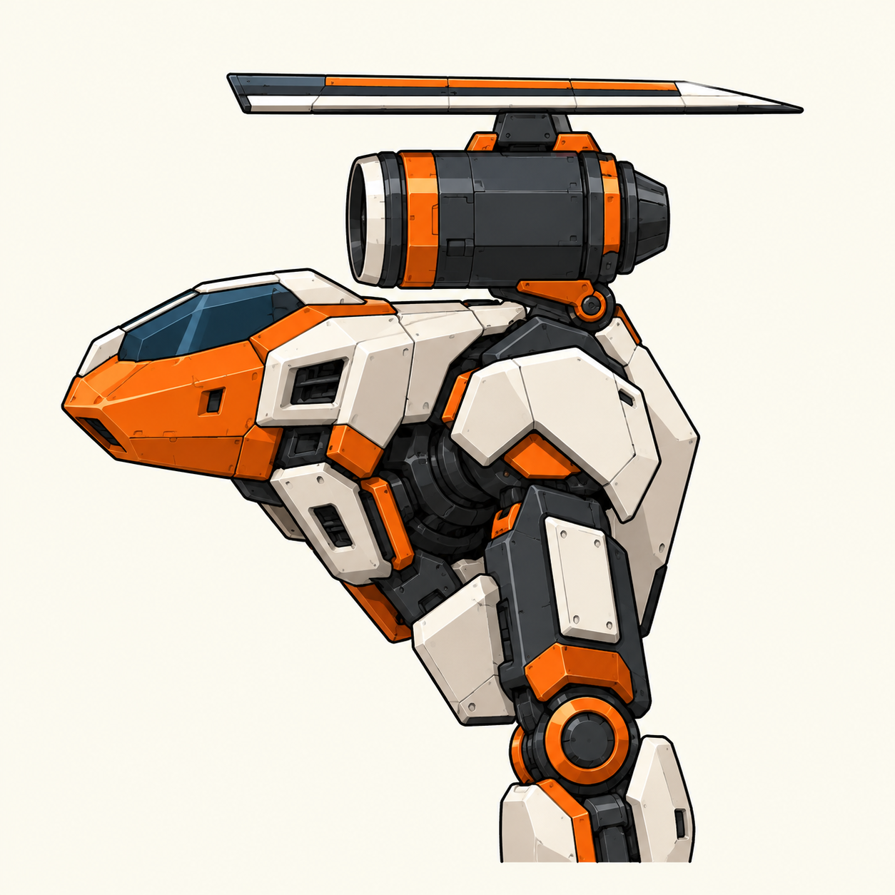
白肩甲和上臂关节在下，发动机/翼架在上，前后方向一致。
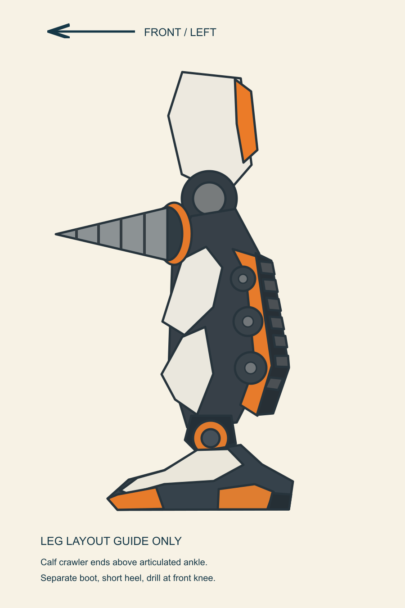
这张只固定前向和分段。正式细节取正面母稿，由内置生图沿约束重绘。
停用侧稿与未采用尝试
原侧稿：肩腿与正面冲突，停用 · 首次分件尝试：肩部机鼻/发动机方向相反，未采用。这些文件仅保留返工依据。
白鸢：两只手，各有完整的连接
你指出的错误成立，母稿也有三只手。旧导出和由它派生的首张认真稿停作生产来源。修正版是右手持笔、左手托住书本右下缘：左前臂从画面右侧袖口横过腰前，不再插袋，也没有书本最左侧多出来的手。

脸、发型、白外套与书笔沿用，只修手臂关系。
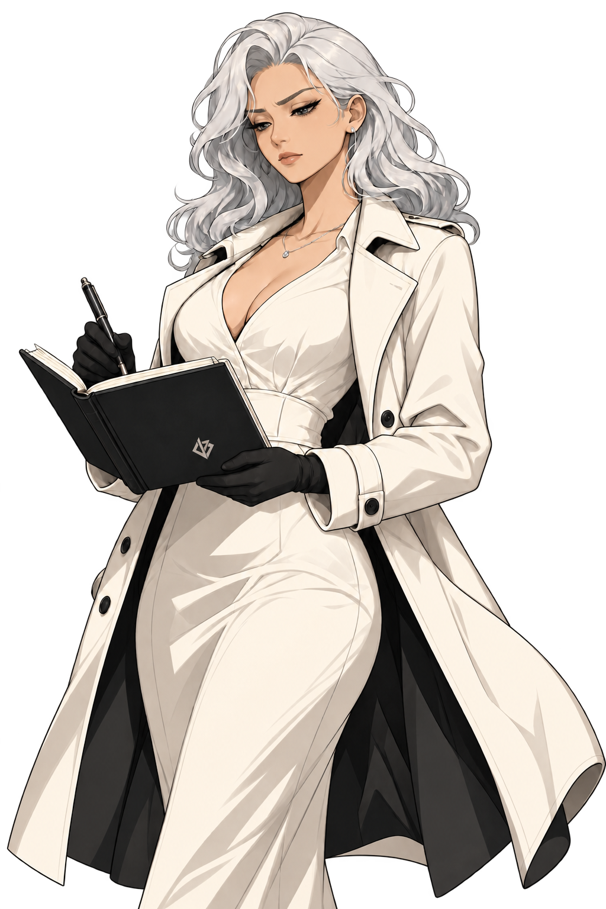
不再沿三手稿继续叠表情。两张均已检查完整手部关系，尚未换入运行。
停用稿与修正依据
三手错稿，仅留历史 · 修正版来源和手臂检查 · 实际修图提示。人物形象认可不等于这处解剖错误被认可。
六个人物，各补一张有用途的表情
点击按钮切换默认/新表情；点击下方链接查看完整立绘。每组按同一母稿坐标和眼至下巴72 UI单位呈现，既检查表演，也看切换是否跳脸、跳尺寸。这是网页源稿预览，游戏里的表情切换尚待接入。


六张实际文件、母稿及眼线接口 · 内置生图实际提示词。这一轮每人补一张，不宣称已经补齐全部情绪或口型动画。
四台来源，合成同一个社勇王
下方是具体部件归属，避免每张图重新发明一台机器。勇拳先是完整人形，其他三台提供外覆结构。旧列车/钻探机图只参照构造，不把旧配色当成已定色。

完整的头、胸腹、双臂双拳、双腿；长发贯穿合体前后。合体增强冠甲和拳体，不另造一台核心。

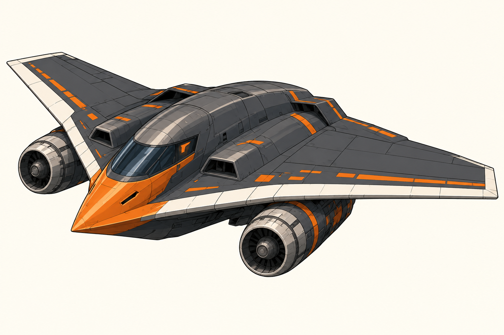
中央机身覆盖上胸；左右机翼和发动机各成翼架，与中央机身之间保留肩部转动位置。

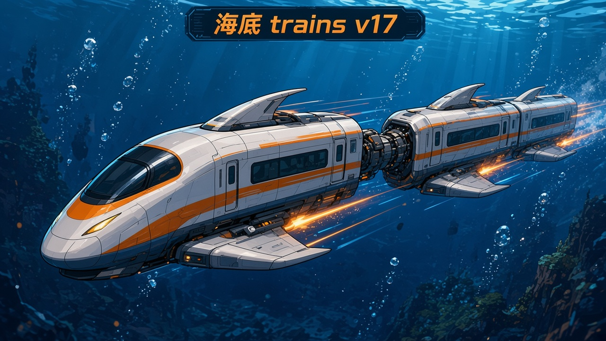
同一列车拆为两节；车头朝肘后，中段左右打开，装到加强前臂外侧；巨拳伸出前端。

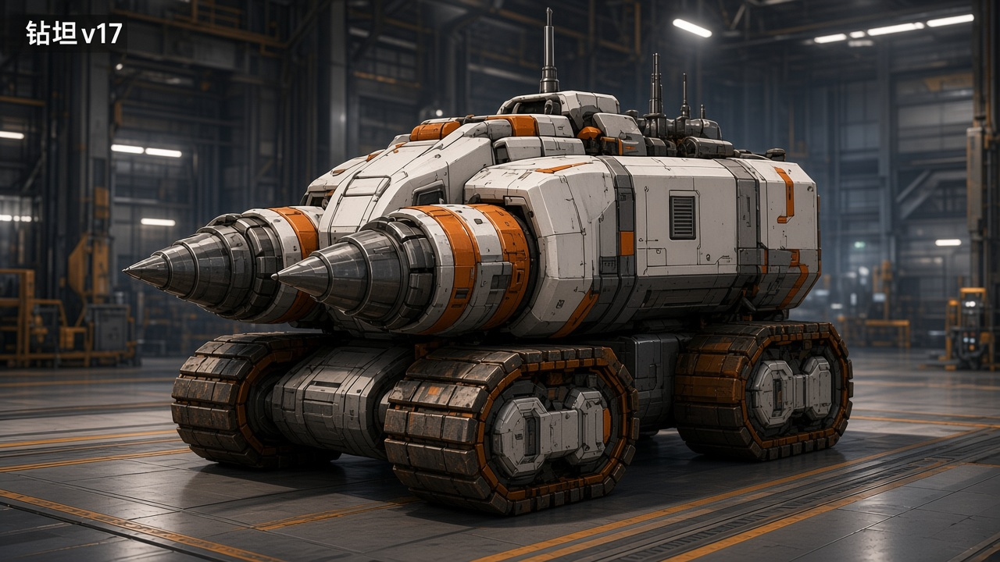
履带、钻架与厚足甲附在完整核心双腿外；膝钻沿各自腿的前向，不从腰胯生出。
保持V19头身比与身高，巨拳按V17重量强化。新核心胸前已去掉近似派系徽记。当前新图仍待你确认，不将部件图当作模型完成。
抬臂时，翼架让位；中央机身不一起扭走

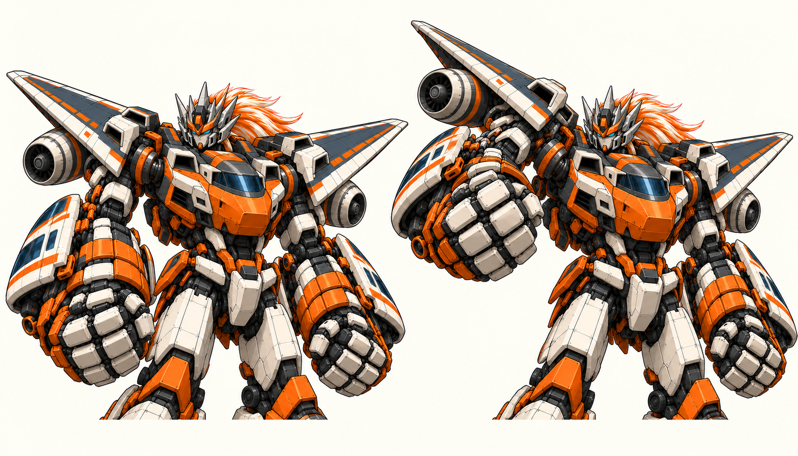

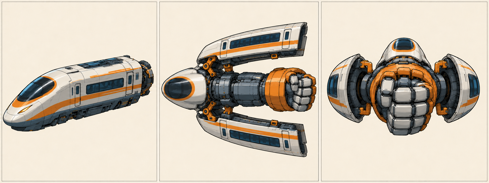
车头朝肘后；炮壳在拳臂外侧，拳头仍是前端主角。未另造一列缩小火车叠在手上。
只保留正确的前后方向；肩甲按用户另选侧图。查看当前逐件修订。
侧背尝试的问题与后续做法
首轮侧背尝试没有得到一致纯侧面，腿足解释也有偏差。第二轮单独侧向还与正面肩腿冲突，现已停用。本轮改用部件侧向与手工轴线/层级图约束，产生上方修订稿；准确三视仍待造型确认后由同一模型投影产生。

本批实际来源、部件对应与准确缺口 · 勇拳转绘提示 · 肩翼意图提示。
这批是设计源稿，不是完整美术升级或52包整改交付。新稿未发给主玩法、未替换运行；先在这里确认，再集中交接。M04新三维、绑定推广和模型替换继续暂停。